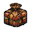
食料 食料 Ration of Food
重さ 1.0 ポンド／値 3
栄養はあるが味気ないこの食料は長旅を考える冒険者に良く合う。
町で手に入る
536 個。浅い順に並べてある。薬・巻物・指輪などは 最初は見た目でしか分からない——飲む、読む、はめてみるまで正体は判らない。 「値」は店で売り買いするときの目安である。

重さ 1.0 ポンド／値 3
栄養はあるが味気ないこの食料は長旅を考える冒険者に良く合う。
町で手に入る
重さ 0.2 ポンド／値 1
日持ちを良くする為に二度焼きした乾パンの一種だ。岩のように固く、味もだいたいその程度。
町で手に入る
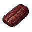
重さ 0.2 ポンド／値 2
良く乾燥させた肉。決して腐る事が無さそうだ。
町で手に入る
重さ 0.5 ポンド／値 1
エリアドールの大麦を醸造し、金色になるまで熟成させたものだ。
町で手に入る
重さ 1.0 ポンド／値 2
水の辺村の緑竜館で出るのと同じくらい質の良い、アルコール度の高いワインだ。
町で手に入る
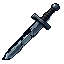
重さ 0.5 ポンド／値 1／ダメージ 1d3
修正が見える
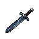
重さ 3.0 ポンド／値 2／ダメージ 2d3
柄の上でギザギザに折れている。
修正が見える
重さ 1.2 ポンド／値 10／ダメージ 1d5
先端が鋭い両刃の短剣だ。
修正が見える町で手に入る
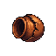
重さ 0.5 ポンド／値 2,000
修正が見える酸で傷まない電撃で傷まない火で傷まない冷気で傷まない
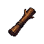
重さ 10.0 ポンド／値 3／ダメージ 1d5
修正が見える町で手に入る
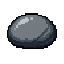
重さ 0.4 ポンド／値 1／ダメージ 2d3
修正が見える町で手に入る
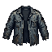
重さ 2.0 ポンド／値 1／防御 1
このぼろきれは元々はローブだった物のようだが、あまりにも継ぎはぎだらけでよく判別できない。
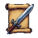
重さ 0.5 ポンド／値 15
町で手に入る
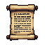
重さ 0.5 ポンド／値 8
町で手に入る
重さ 0.5 ポンド／値 8
町で手に入る
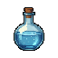
重さ 0.4 ポンド／値 1
見た目が決まっている町で手に入る
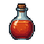
重さ 0.4 ポンド／値 1
見た目が決まっている町で手に入る
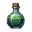
重さ 0.4 ポンド／値 2
見た目が決まっている
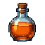
重さ 0.4 ポンド／値 1
重さ 0.4 ポンド
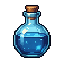
重さ 0.4 ポンド／値 1
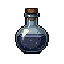
重さ 0.4 ポンド／値 1
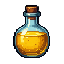
重さ 0.4 ポンド／値 20
町で手に入る
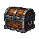
重さ 25.0 ポンド
重さ 0.1 ポンド
重さ 0.2 ポンド
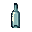
重さ 0.2 ポンド／値 1
重さ 0.5 ポンド
重さ 0.3 ポンド
重さ 0.1 ポンド
重さ 0.4 ポンド／値 500
謎めいたルーンで、その力は計り知れない。
重さ 2.0 ポンド
重さ 0.2 ポンド
複数形で数える
重さ 2.0 ポンド
重さ 1.0 ポンド
重さ 1.0 ポンド
複数形で数える
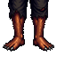
重さ 1.0 ポンド
複数形で数える
重さ 1.0 ポンド
複数形で数える
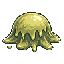
深さ 1／重さ 0.5 ポンド／値 2
ぞっとするような菌類の固まりだ。なぜか食欲を刺激する…。
深さ 1／重さ 33.3 ポンド／値 1,000,000／ダメージ 1d11
必ずアーティファクト
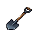
深さ 1／重さ 6.0 ポンド／値 10／ダメージ 1d3
小型で頑丈なシャベルだ。
修正が見える掘削町で手に入る
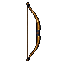
深さ 1／重さ 5.0 ポンド／値 1,000,000
必ずアーティファクト
深さ 1／重さ 1.0 ポンド／値 3／防御 1
冒険者用の丈夫な外套だ。
町で手に入る
深さ 1／重さ 0.5 ポンド／値 3／防御 1
革製の手甲で、手のひらは武器を握るために開いている。
町で手に入る
深さ 1／重さ 0.2 ポンド／値 1,000
必ずアーティファクト
深さ 1／重さ 1.0 ポンド／値 1／防御 1
深さ 1／重さ 2.0 ポンド／値 4／防御 2
首から踵までを覆う、ビロードまたは綿製の実用的な衣服だ。
町で手に入る
深さ 1／重さ 2.0 ポンド／値 4
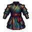
深さ 1／重さ 1.0 ポンド／値 1,000,000
必ずアーティファクト
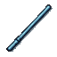
深さ 1／重さ 0.2 ポンド／値 1
町で手に入る
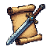
深さ 1／重さ 0.5 ポンド
深さ 1／重さ 0.5 ポンド
深さ 1／重さ 0.5 ポンド／値 15
町で手に入る
深さ 1／重さ 0.5 ポンド／値 50
町で手に入る
深さ 1／重さ 0.5 ポンド／値 5
町で手に入る
深さ 1／重さ 0.5 ポンド／値 15
深さ 1／重さ 0.5 ポンド／値 10
深さ 1／重さ 0.4 ポンド／値 1
深さ 1／重さ 0.4 ポンド／値 200
町で手に入る
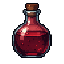
深さ 1／重さ 0.4 ポンド／値 120
深さ 1／重さ 0.4 ポンド／値 120
町で手に入る
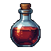
深さ 1／重さ 0.4 ポンド／値 200
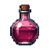
深さ 1／重さ 0.4 ポンド／値 35
町で手に入る
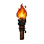
深さ 1／重さ 3.0 ポンド／値 2
町で手に入る
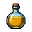
深さ 1／重さ 1.0 ポンド／値 3／ダメージ 2d6
町で手に入る
深さ 1／重さ 5.0 ポンド／値 500,000
酸で傷まない電撃で傷まない火で傷まない冷気で傷まない
深さ 1／重さ 0.0 ポンド／値 3
深さ 1／重さ 0.0 ポンド／値 4
深さ 1／重さ 0.0 ポンド／値 5
深さ 1／重さ 0.0 ポンド／値 6
深さ 1／重さ 0.0 ポンド／値 7
深さ 1／重さ 0.0 ポンド／値 8
深さ 1／重さ 0.0 ポンド／値 9
複数形で数える
深さ 1／重さ 0.0 ポンド／値 10
複数形で数える
深さ 1／重さ 0.0 ポンド／値 12
深さ 1／重さ 0.0 ポンド／値 14
深さ 1／重さ 0.0 ポンド／値 16
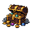
深さ 1／重さ 0.0 ポンド／値 18
複数形で数える
深さ 1／重さ 0.0 ポンド／値 20
複数形で数える
深さ 1／重さ 0.0 ポンド／値 24
複数形で数える
深さ 1／重さ 0.0 ポンド／値 28
複数形で数える
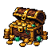
深さ 1／重さ 0.0 ポンド／値 32
複数形で数える
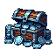
深さ 1／重さ 0.0 ポンド／値 40
深さ 1／重さ 0.0 ポンド／値 80
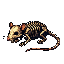
深さ 1／重さ 1.0 ポンド
深さ 1／重さ 1.0 ポンド
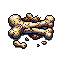
深さ 1／重さ 2.0 ポンド
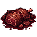
深さ 1／重さ 4.0 ポンド
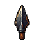
深さ 1／重さ 1.0 ポンド／値 1
町で手に入る
深さ 2／重さ 6.0 ポンド／値 50／防御 5
町で手に入る
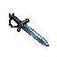
深さ 3／重さ 3.0 ポンド／値 25／ダメージ 1d6
拳を防御する大きな鍔を持つ短い剣。主に決闘で防御用の短剣として用いられる。
修正が見える町で手に入る
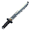
深さ 3／重さ 2.0 ポンド／値 30／ダメージ 1d7
修正が見える町で手に入る
深さ 3／重さ 3.0 ポンド／値 30／ダメージ 1d7
重い鞭だ。きつく巻いたこの鞭を肩の上から振り下ろすと大の男でも打ち倒す事ができる。
修正が見える町で手に入る
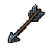
深さ 3／重さ 0.2 ポンド／値 1／ダメージ 3d4
たくみに羽が付けられた真っ直な標準的な矢だ。
修正が見える町で手に入る
深さ 3／重さ 0.5 ポンド／値 2／ダメージ 3d3
修正が見える町で手に入る
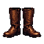
深さ 3／重さ 2.0 ポンド／値 7／防御 2
ふくらはぎの高さまでの柔軟な革のブーツだ。踵からふくらはぎまで結び紐が付いている。
町で手に入る
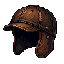
深さ 3／重さ 1.5 ポンド／値 12／防御 2
煮固めた革製の詰め物入りの帽子だ。
町で手に入る
深さ 3／重さ 0.8 ポンド／値 10／防御 1
柔らかい毛糸の帽子だ。
町で手に入る
深さ 3／重さ 2.0 ポンド／値 20／防御 1
とんがった帽子だ。（かぶれば自動的に魔法使いになれるのだろうか、と考えてしまう……）
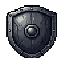
深さ 3／重さ 5.0 ポンド／値 15／防御 3
煮固めた動物の革を重ねた小さな木の板いっぱいに伸ばして作った丸い盾だ。
町で手に入る
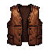
深さ 3／重さ 8.0 ポンド／値 18／防御 4
しなやかな革の胴当てに薄い革ジャケットが付いた鎧だ。
町で手に入る
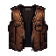
深さ 3／重さ 9.0 ポンド／値 35／防御 5
多数の金属製の鋲で補強されたしなやかな革の胴当てだ。
町で手に入る
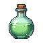
深さ 3／重さ 0.4 ポンド
深さ 3／重さ 0.4 ポンド／ダメージ 3d12
深さ 3／重さ 0.4 ポンド／値 50
町で手に入る
深さ 3／重さ 5.0 ポンド／値 35
火で傷まない町で手に入る
深さ 5／重さ 0.1 ポンド／ダメージ 4d4
それは食べると毒に冒される。
深さ 5／重さ 0.1 ポンド
それは食べると盲目になる。
深さ 5／重さ 0.1 ポンド
それは食べると恐怖する。
深さ 5／重さ 0.1 ポンド
それは食べると混乱する。
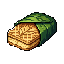
深さ 5／重さ 0.3 ポンド／値 30
銀色の葉に包まれた小さな山吹色の薄焼き菓子の束だ。エルフの技で作られ、その滋養は他に食べ物が何も無くとも数週間もの間生命を維持する程である。
町で手に入る
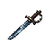
深さ 5／重さ 4.0 ポンド／値 42／ダメージ 1d8
突きに用いる長く細い刀身を持つ剣。主に決闘に用いられる。
修正が見える町で手に入る
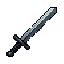
深さ 5／重さ 7.5 ポンド／値 48／ダメージ 1d8
ロング・ソードを少し短くしたような剣だ。ホビットにぴったりのサイズだ。
修正が見える町で手に入る
深さ 5／重さ 8.0 ポンド／値 90／ダメージ 1d8
主に突く用途に用いる短い剣だ。
修正が見える町で手に入る
深さ 5／重さ 5.0 ポンド／値 50／ダメージ 1d9
軽い少し曲った刃を持ち、切る事も突く事もできる。馬上及び決闘においてよく使われる。
修正が見える乗馬に向く町で手に入る
深さ 5／重さ 11.0 ポンド／値 85／ダメージ 1d9
大きな曲った刀身と手をカバーする網状の柄を備えた剣だ。船員に良く用いられる。
修正が見える町で手に入る
深さ 5／重さ 10.0 ポンド／値 200／ダメージ 2d5
修正が見える乗馬に向く町で手に入る
深さ 5／重さ 5.0 ポンド／値 36／ダメージ 1d8
最も基本的な竿状武器だ。軽く長い竿の先に尖った両刃の穂先が付いていて、突き刺すのに適している。
修正が見える乗馬に向く投げるためのもの町で手に入る
深さ 5／重さ 7.0 ポンド／値 120／ダメージ 1d10
三又の槍で、元来は魚を捕るのに用いられていた。
修正が見える乗馬に向く町で手に入る
深さ 5／重さ 12.0 ポンド／値 130／ダメージ 2d5
鉄球、または鍔付きの多面体形の鉄塊が先端に付いた棍棒だ。
修正が見える町で手に入る
深さ 5／重さ 12.0 ポンド／値 225／ダメージ 3d4
長いハンドルがあり、先の尖った槌が先端から直角に付き出た形をしている。
修正が見える乗馬に向く町で手に入る
深さ 5／重さ 15.0 ポンド／値 50／ダメージ 1d5
重い採掘用の道具で、微妙に曲った頭部の両端に切先が付いている。
修正が見える掘削町で手に入る
深さ 5／重さ 0.5 ポンド／値 5／ダメージ x2.00
長い紐の中間にある革製の石受け部分に石を包み、これを振り回す勢いで石を飛ばす武器だ。原始的な構造だが威力はある。
修正が見える町で手に入る
深さ 5／重さ 4.0 ポンド／値 12／防御 3
長い旅路でも良く保つ丈夫な革製のブーツだ。
町で手に入る
深さ 5／重さ 0.5 ポンド／値 3／防御 1
手を守る革の防具で、武器を握れるよう手のひらが開いている。拳の甲は鋲で重みを加えてあり、より重い一撃を放てる。
町で手に入る
深さ 5／重さ 3.0 ポンド／値 50／防御 4
深さ 5／重さ 10.0 ポンド／値 150／防御 6
煮固めた革製の胴当てと肩当てが付いた鎧だ。
町で手に入る
深さ 5／重さ 8.0 ポンド／値 200／防御 6
町で手に入る
深さ 5／重さ 5.0 ポンド／値 1
町で手に入る
深さ 5／重さ 0.5 ポンド
深さ 5／重さ 0.5 ポンド／値 150
町で手に入る
深さ 5／重さ 0.5 ポンド／値 30
町で手に入る
深さ 5／重さ 0.5 ポンド／値 8
町で手に入る
深さ 5／重さ 0.5 ポンド／値 10
町で手に入る
深さ 5／重さ 0.5 ポンド／値 10
深さ 5／重さ 0.5 ポンド／値 30
町で手に入る
深さ 5／重さ 0.4 ポンド
深さ 5／重さ 0.4 ポンド／値 100
町で手に入る
深さ 5／重さ 25.0 ポンド／値 20／ダメージ 2d3
深さ 5／重さ 3.0 ポンド／ダメージ 1d2
深さ 5／重さ 4.0 ポンド／ダメージ 1d2
深さ 5／重さ 5.0 ポンド／ダメージ 1d2
深さ 5／重さ 6.0 ポンド／ダメージ 1d2
深さ 5／重さ 20.0 ポンド／値 75
深さ 10／重さ 0.1 ポンド
それは食べると幻覚に侵される。
深さ 10／重さ 0.1 ポンド／ダメージ 5d5
それは食べると6d6のダメージを受け、腕力の現在値が下がる。
深さ 10／重さ 0.1 ポンド／ダメージ 4d4
それは食べると6d6のダメージを受け、耐久力の現在値が下がる。
深さ 10／重さ 0.1 ポンド／値 120
それは食べると毒を癒す。
町で手に入る
深さ 10／重さ 0.1 ポンド／値 30
それは食べると盲目を癒す。
町で手に入る
深さ 10／重さ 0.1 ポンド／値 25
それは食べると恐怖を取り除く。
町で手に入る
深さ 10／重さ 0.1 ポンド／値 30
それは食べると混乱から立ち直る。
町で手に入る
深さ 10／重さ 13.0 ポンド／値 190／ダメージ 2d5
修正が見える町で手に入る
深さ 10／重さ 15.0 ポンド／値 255／ダメージ 2d6
重く広い刀身と頑丈な柄を持った両刃の直刀だ。
修正が見える乗馬に向く町で手に入る
深さ 10／重さ 13.0 ポンド／値 300／ダメージ 2d6
十字の形に2本の柄が付いた長い両刃の直刀だ。
修正が見える乗馬に向く町で手に入る
深さ 10／重さ 13.0 ポンド／値 250／ダメージ 2d6
斬る用途に特化した三日月のような刀身を持つ片刃の剣だ。
修正が見える町で手に入る
深さ 10／重さ 6.0 ポンド／値 120／ダメージ 1d6
修正が見える町で手に入る
深さ 10／重さ 7.0 ポンド／値 110／ダメージ 2d4
修正が見える町で手に入る
深さ 10／重さ 16.0 ポンド／値 340／ダメージ 1d10
修正が見える町で手に入る
深さ 10／重さ 12.0 ポンド／値 376／ダメージ 2d6
修正が見える町で手に入る
深さ 10／重さ 30.0 ポンド／値 230／ダメージ 2d10
修正が見える乗馬に向く町で手に入る
深さ 10／重さ 3.0 ポンド／値 30
必ずアーティファクト
深さ 10／重さ 15.0 ポンド／値 200／ダメージ 1d10
2メートル程度の長さの木製の杖だ。両手で持って打ち付けたり攻撃を受け止める為に用いられる。
修正が見える町で手に入る
深さ 10／重さ 15.0 ポンド／値 396／ダメージ 2d7
星型のトゲが突き出た鉄球が先端に付いた棍棒だ。
修正が見える町で手に入る
深さ 10／重さ 15.0 ポンド／値 353／ダメージ 2d7
2本の重い木製の棒を短い鎖で繋げた物だ。対象を叩き潰す為に用いる。
修正が見える乗馬に向く町で手に入る
深さ 10／重さ 3.0 ポンド／値 400／ダメージ x2.50
伝統的に狩人に用いられる武器だ。この軽い弓は簡単に引く事ができる。
修正が見える町で手に入る
深さ 10／重さ 0.3 ポンド／値 2／ダメージ 3d5
発射時の強い負荷に耐えるように作られた短く重いクロスボウ用の矢だ。
修正が見える町で手に入る
深さ 10／重さ 2.0 ポンド／値 30／防御 3
頭部を保護する鋼鉄の帽子だ。
町で手に入る
深さ 10／重さ 2.0 ポンド／値 35／ダメージ 1d2／防御 4
手と手首を鋼鉄板で完全に覆うグローブだ。
町で手に入る
深さ 10／重さ 6.5 ポンド／値 40／ダメージ 1d2／防御 5
金属の縁材と中心の円盤で強化した円形の木の盾だ。
町で手に入る
深さ 10／重さ 11.0 ポンド／値 200／ダメージ 1d2／防御 7
多数の金属製の鋲で補強した革製のシャツに煮固めた革製の胴当てと肩当てが付いた鎧だ。
町で手に入る
深さ 10／重さ 0.2 ポンド／値 500
深さ 10／重さ 0.2 ポンド／値 500
深さ 10／重さ 1.5 ポンド／値 1
町で手に入る
深さ 10／重さ 0.5 ポンド
深さ 10／重さ 0.5 ポンド／値 40
町で手に入る
深さ 10／重さ 0.5 ポンド／値 100
町で手に入る
深さ 10／重さ 0.5 ポンド／値 40
深さ 10／重さ 0.5 ポンド／値 50
深さ 10／重さ 0.5 ポンド／値 1,000
深さ 10／重さ 0.5 ポンド／値 10
町で手に入る
深さ 10／重さ 0.4 ポンド
深さ 10／重さ 0.4 ポンド
深さ 10／重さ 0.4 ポンド／値 50
町で手に入る
深さ 10／重さ 0.4 ポンド／値 80
町で手に入る
深さ 10／重さ 0.4 ポンド
深さ 10／重さ 3.0 ポンド／値 100
町で手に入る
深さ 10／重さ 3.0 ポンド／値 100
町で手に入る
深さ 10／重さ 3.0 ポンド／値 100
町で手に入る
深さ 10／重さ 3.0 ポンド／値 100
町で手に入る
深さ 10／重さ 3.0 ポンド／値 100
町で手に入る
深さ 10／重さ 3.0 ポンド／値 100
町で手に入る
深さ 10／重さ 3.0 ポンド／値 100
町で手に入る
深さ 10／重さ 3.0 ポンド／値 100
町で手に入る
深さ 10／重さ 3.0 ポンド／値 100
町で手に入る
深さ 10／重さ 3.0 ポンド／値 100
町で手に入る
深さ 10／重さ 3.0 ポンド／値 100
町で手に入る
深さ 10／重さ 3.0 ポンド／値 100
町で手に入る
深さ 10／重さ 3.0 ポンド／値 100
町で手に入る
深さ 10／重さ 3.0 ポンド／値 100
町で手に入る
深さ 10／重さ 3.0 ポンド／値 100
町で手に入る
深さ 10／重さ 3.0 ポンド／値 100
町で手に入る
深さ 10／重さ 3.0 ポンド／値 100
町で手に入る
深さ 10／重さ 3.0 ポンド／値 100
深さ 10／重さ 50.0 ポンド／値 50
深さ 11／重さ 7.0 ポンド／値 200／ダメージ 1d8
修正が見える町で手に入る
深さ 13／重さ 0.5 ポンド／値 3,000
深さ 14／重さ 10.0 ポンド／値 240／ダメージ 1d11
修正が見える乗馬に向く町で手に入る
深さ 15／重さ 0.1 ポンド
それは食べると8d8のダメージを受け、知能の現在値が下がる。
深さ 15／重さ 0.1 ポンド
それは食べると8d8のダメージを受け、賢さの現在値が下がる。
深さ 15／重さ 0.1 ポンド／値 50／ダメージ 10d10
それは食べると10d10のダメージを受け、耐久力の現在値が下がる。
深さ 15／重さ 0.2 ポンド／値 30
それは食べると回復が早くなる。
町で手に入る
深さ 15／重さ 8.0 ポンド／値 220／ダメージ 1d9
修正が見える町で手に入る
深さ 15／重さ 9.0 ポンド／値 210／ダメージ 2d5
修正が見える町で手に入る
深さ 15／重さ 10.0 ポンド／値 265／ダメージ 1d10
修正が見える町で手に入る
深さ 15／重さ 14.0 ポンド／値 350／ダメージ 3d5
片手半剣とも呼ばれる。通常のロング・ソードよりも長い両刃の直刀だ。
修正が見える町で手に入る
深さ 15／重さ 16.0 ポンド／値 358／ダメージ 2d6
補強された柄に鉄の穂先が付いた、非常に長く重い槍だ。
修正が見える町で手に入る
深さ 15／重さ 12.0 ポンド／値 408／ダメージ 2d7
木製の柄に、背が烏のクチバシを模した突起になった形の幅が狭い斧が付いている。
修正が見える町で手に入る
深さ 15／重さ 13.0 ポンド／値 304／ダメージ 2d7
単純な作りの片刃の戦斧で、対象の胴体や鎧を切断する威力がある。
修正が見える町で手に入る
深さ 15／重さ 17.0 ポンド／値 334／ダメージ 2d9
幅広の両刃の斧だ。ドワーフによく用いられる。
修正が見える町で手に入る
深さ 15／重さ 18.0 ポンド／値 502／ダメージ 3d5
重い棍棒の先に鉛を詰めた鋼鉄の重りを繋げてある。対象を叩き潰す為に用いる。
修正が見える町で手に入る
深さ 15／重さ 20.0 ポンド／値 1,000／ダメージ 3d9
修正が見える必ずアーティファクト乗馬に向く
深さ 15／重さ 1.5 ポンド／値 1,000／ダメージ 1d4
修正が見える必ずアーティファクト
深さ 15／重さ 11.0 ポンド／値 500／ダメージ x3.50
鋼鉄製の弦をあらかじめ引いておき、機械式の引き金を引くだけで矢を発射する事ができる。ショート・ボウやロング・ボウに比べて扱いが簡単な武器だ。
修正が見える町で手に入る
深さ 15／重さ 10.0 ポンド／値 1,000
必ずアーティファクト
深さ 15／重さ 10.0 ポンド／値 1,000
必ずアーティファクト
深さ 15／重さ 10.0 ポンド／値 100／ダメージ 1d2／防御 6
重ねた木の板を厚い革で覆った大きな楕円形の盾だ。
町で手に入る
深さ 15／重さ 11.0 ポンド／値 400／防御 8
深さ 15／重さ 14.0 ポンド／値 450／防御 11
革製のシャツに煮固めた革製の鱗のような形の部品を多数縫い付けてある鎧だ。
町で手に入る
深さ 15／重さ 8.0 ポンド／値 5,000／防御 4
隠密火で傷まない複数形で数える
深さ 15／重さ 0.5 ポンド
深さ 15／重さ 0.5 ポンド／値 250
深さ 15／重さ 0.5 ポンド／値 250
深さ 15／重さ 0.5 ポンド／値 250
深さ 15／重さ 0.4 ポンド／値 2,000
深さ 15／重さ 3.0 ポンド／値 250
町で手に入る
深さ 15／重さ 6.0 ポンド／値 450
火で傷まない
深さ 15／重さ 0.5 ポンド／値 60,000
必ずアーティファクト
深さ 15／重さ 50.0 ポンド／値 60／ダメージ 2d5
深さ 15／重さ 50.0 ポンド／値 100
深さ 15／重さ 12.0 ポンド／値 1,000
町で手に入る
深さ 15／重さ 0.3 ポンド／値 1,000
深さ 15／重さ 2.5 ポンド／値 10,000
深さ 16／重さ 6.0 ポンド／値 120／ダメージ 2d4
修正が見える町で手に入る
深さ 16／重さ 3.0 ポンド／値 60／ダメージ 1d2／防御 4
町で手に入る
深さ 18／重さ 15.5 ポンド／値 301／ダメージ 1d12
修正が見える乗馬に向く町で手に入る
深さ 20／重さ 0.1 ポンド
それは食べると麻痺する。
深さ 20／重さ 0.1 ポンド／値 50／ダメージ 10d10
それは食べると10d10のダメージを受け、腕力の現在値が下がる。
深さ 20／重さ 0.1 ポンド／値 350
それは食べると耐久力が回復する。
深さ 20／重さ 0.1 ポンド／値 1,000
それは食べると全ステータスが回復する。
見た目が入れ替わらない
深さ 20／重さ 0.1 ポンド／値 350
それは食べると腕力が回復する。
深さ 20／重さ 12.0 ポンド／値 400／ダメージ 3d5
長い柄と微妙に曲った刃を持つ切れ味に優れた片刃の剣だ。
修正が見える町で手に入る
深さ 20／重さ 19.0 ポンド／値 363／ダメージ 2d7
2.5メートル程の補強された木製の棒の先端に大きなナイフの刃が真っ直に付いている。切り裂く事も付き刺す事もできる。
修正が見える乗馬に向く町で手に入る
深さ 20／重さ 15.0 ポンド／値 200／ダメージ 2d5
頑丈な木製のハンドルに、重い鉄のボールが鎖で繋っている。
修正が見える乗馬に向く町で手に入る
深さ 20／重さ 12.0 ポンド／値 350／ダメージ 4d3
修正が見える町で手に入る
深さ 20／重さ 16.0 ポンド／値 310／ダメージ 1d12
修正が見える町で手に入る
深さ 20／重さ 6.0 ポンド／値 100／ダメージ 1d3
ノームの職人によって作られた鋼鉄製のシャベルだ。
修正が見える掘削
深さ 20／重さ 1.0 ポンド／値 30
町で手に入る
深さ 20／重さ 0.4 ポンド／値 3／ダメージ 4d4
修正が見える
深さ 20／重さ 3.0 ポンド／値 200／防御 3
深さ 20／重さ 8.0 ポンド／値 50／ダメージ 1d2／防御 4
二重張りの革のブーツで、爪先と踵が鉄で補強されており、履き手は素早い蹴りを繰り出せる。
町で手に入る
深さ 20／重さ 7.5 ポンド／値 75／ダメージ 1d3／防御 5
頭部を完全に覆う鉄製のヘルメットだ。
町で手に入る
深さ 20／重さ 2.5 ポンド／値 35／ダメージ 2d2／防御 4
手と手首を鋼の板ですっぽり覆う手甲だ。拳の甲から鋭い棘が突き出している。
深さ 20／重さ 13.0 ポンド／値 700／ダメージ 1d2／防御 12
町で手に入る
深さ 20／重さ 20.0 ポンド／値 500／ダメージ 1d4／防御 12
町で手に入る
深さ 20／重さ 0.5 ポンド／値 200
深さ 20／重さ 0.5 ポンド／値 500
深さ 20／重さ 0.4 ポンド
深さ 20／重さ 0.4 ポンド
深さ 20／重さ 0.4 ポンド
深さ 20／重さ 0.4 ポンド／値 100
町で手に入る
深さ 20／重さ 0.4 ポンド／値 150
町で手に入る
深さ 20／重さ 0.4 ポンド／値 400
町で手に入る
深さ 20／重さ 0.4 ポンド／値 220
町で手に入る
深さ 20／重さ 0.4 ポンド／値 3,000
見た目が入れ替わらない
深さ 20／重さ 0.4 ポンド／値 250
酸で傷まない電撃で傷まない火で傷まない冷気で傷まない
深さ 20／重さ 0.4 ポンド／値 180
見た目が入れ替わらない
深さ 20／重さ 3.0 ポンド／値 1,000
町で手に入る
深さ 20／重さ 3.0 ポンド／値 1,000
町で手に入る
深さ 20／重さ 3.0 ポンド／値 1,000
町で手に入る
深さ 20／重さ 3.0 ポンド／値 1,000
町で手に入る
深さ 20／重さ 3.0 ポンド／値 1,000
町で手に入る
深さ 20／重さ 3.0 ポンド／値 1,000
町で手に入る
深さ 20／重さ 3.0 ポンド／値 1,000
町で手に入る
深さ 20／重さ 3.0 ポンド／値 1,000
町で手に入る
深さ 20／重さ 3.0 ポンド／値 1,000
町で手に入る
深さ 20／重さ 3.0 ポンド／値 1,000
町で手に入る
深さ 20／重さ 3.0 ポンド／値 1,000
町で手に入る
深さ 20／重さ 3.0 ポンド／値 1,000
町で手に入る
深さ 20／重さ 3.0 ポンド／値 1,000
町で手に入る
深さ 20／重さ 3.0 ポンド／値 1,000
町で手に入る
深さ 20／重さ 3.0 ポンド／値 1,000
町で手に入る
深さ 20／重さ 3.0 ポンド／値 1,000
町で手に入る
深さ 20／重さ 3.0 ポンド／値 1,000
町で手に入る
深さ 20／重さ 3.0 ポンド／値 1,000
深さ 20／重さ 0.5 ポンド／値 20,000
必ずアーティファクト
深さ 20／重さ 0.5 ポンド／値 25,000
必ずアーティファクト
深さ 20／重さ 50.0 ポンド／値 200
深さ 21／重さ 16.5 ポンド／値 320／ダメージ 2d7
修正が見える町で手に入る
深さ 25／重さ 15.0 ポンド／値 408／ダメージ 2d7
修正が見える町で手に入る
深さ 25／重さ 17.5 ポンド／値 330／ダメージ 2d8
修正が見える町で手に入る
深さ 25／重さ 19.0 ポンド／値 430／ダメージ 3d6
長い竿に重い斧の刃とその反対側にスパイクが付き、さらに竿の先端に付き刺す為の穂先が付いている。最も完成されたタイプの竿状武器である。
修正が見える町で手に入る
深さ 25／重さ 19.0 ポンド／値 570／ダメージ 2d8
修正が見える
深さ 25／重さ 4.0 ポンド／値 4,000／ダメージ 1d2
修正が見える消費魔力減
深さ 25／重さ 4.0 ポンド／値 400
吟遊詩人が好んで使う弦楽器だ。
魅力付呪できない
深さ 25／重さ 20.0 ポンド／値 550／ダメージ 1d4／防御 14
この鎧の各部の継ぎ目は錆で脆くなっており、朽ちた鎖の輪は固まってしまい弱まっている。
深さ 25／重さ 25.0 ポンド／値 550／ダメージ 1d4／防御 13
革製の袖付きシャツに鋼鉄製の鱗のような形の部品を多数縫い付けてある鎧だ。
町で手に入る
深さ 25／重さ 22.0 ポンド／値 750／ダメージ 1d4／防御 14
鋼鉄の輪が噛み合った袖付きの鎖かたびらで、革が当てられている。鎖かたびらを作るには熟練を要するが、高い防御力を持ち比較的に軽量に仕上がる。
町で手に入る
深さ 25／重さ 23.0 ポンド／値 700／ダメージ 1d4／防御 15
町で手に入る
深さ 25／重さ 0.5 ポンド／値 80
町で手に入る
深さ 25／重さ 0.4 ポンド／値 1,000
見た目が入れ替わらない
深さ 25／重さ 0.4 ポンド／値 220
町で手に入る
深さ 25／重さ 0.4 ポンド／値 220
町で手に入る
深さ 25／重さ 0.4 ポンド／値 220
町で手に入る
深さ 25／重さ 0.4 ポンド／値 220
町で手に入る
深さ 25／重さ 0.4 ポンド／値 220
町で手に入る
深さ 25／重さ 0.4 ポンド／値 800
深さ 25／重さ 3.0 ポンド／値 2,500
町で手に入る
深さ 25／重さ 30.0 ポンド／値 100／ダメージ 2d4
深さ 25／重さ 50.0 ポンド／値 500
深さ 30／重さ 20.0 ポンド／値 775／ダメージ 3d7
非常に大きな両刃の直刀で、これを片手で持てる者はほとんどいない。
修正が見える町で手に入る
深さ 30／重さ 15.0 ポンド／値 300／ダメージ 1d5
粗雑で醜い作りだが、実用的なつるはしだ。
修正が見える掘削
深さ 30／重さ 4.0 ポンド／値 400／ダメージ x3.00
人の身長程の長さの弓だ。厚い鉄製の鎧でも貫通する程の威力を持つ。
修正が見える町で手に入る
深さ 30／重さ 20.0 ポンド／値 500／ダメージ x4.00
修正が見える町で手に入る
深さ 30／重さ 0.5 ポンド／値 1,500／防御 4
不思議な絹のような素材で作られた外套だ。その素材は周りの景色の色と形を映し出し、着用者を隠す効果がある。
酸で傷まない冷気で傷まない火で傷まない電撃で傷まない隠密探索
深さ 30／重さ 2.0 ポンド／値 500
鉄の環に鉄の突起で飾りが付けられた冠だ。君主の印である。
深さ 30／重さ 12.0 ポンド／値 200／ダメージ 1d3／防御 8
革で覆った木の板を金属で縁取った楕円形の盾だ。盾の大きな鉄の突起は素晴らしい腕の防御をもたらす。
町で手に入る
深さ 30／重さ 0.2 ポンド／値 78,000
酸で傷まない電撃で傷まない火で傷まない冷気で傷まない敵を怒らせる
深さ 30／重さ 27.0 ポンド／値 900／ダメージ 1d4／防御 16
噛み合った鋼鉄の輪でできた鎖かたびらの胴鎧と脛当てと袖であり、2枚目の鎖の層で重要な部分を戦略的に補強しており、至る所に重い詰め物の層がある。
町で手に入る
深さ 30／重さ 25.0 ポンド／値 1,000／ダメージ 1d4／防御 16
町で手に入る
深さ 30／重さ 0.5 ポンド／値 1,000
深さ 30／重さ 0.5 ポンド／値 1,500
町で手に入る
深さ 30／重さ 0.5 ポンド／値 250
深さ 30／重さ 0.5 ポンド／値 1,000
深さ 30／重さ 0.4 ポンド／値 25,000
見た目が入れ替わらない
深さ 30／重さ 0.4 ポンド／値 25,000
見た目が入れ替わらない
深さ 30／重さ 0.4 ポンド／値 25,000
見た目が入れ替わらない
深さ 30／重さ 0.4 ポンド／値 25,000
見た目が入れ替わらない
深さ 30／重さ 0.4 ポンド／値 25,000
見た目が入れ替わらない
深さ 30／重さ 0.4 ポンド／値 25,000
見た目が入れ替わらない
深さ 30／重さ 0.4 ポンド／値 25,000
見た目が入れ替わらない
深さ 30／重さ 1.0 ポンド／値 10,000
必ずアーティファクト
深さ 30／重さ 50.0 ポンド／値 1,000
深さ 31／重さ 0.4 ポンド／値 500
見た目が入れ替わらない
深さ 32／重さ 28.0 ポンド／値 920／ダメージ 1d4／防御 17
町で手に入る
深さ 32／重さ 5.0 ポンド／値 100
町で手に入る
深さ 35／重さ 19.0 ポンド／値 579／ダメージ 5d4
修正が見える町で手に入る
深さ 35／重さ 14.0 ポンド／値 400／ダメージ 2d10
修正が見える乗馬に向く
深さ 35／重さ 0.2 ポンド／値 1／ダメージ 3d4
必ずアーティファクト修正が見える
深さ 35／重さ 20.0 ポンド／値 1,000／防御 15
深さ 35／重さ 28.0 ポンド／値 1,020／ダメージ 1d4／防御 18
町で手に入る
深さ 35／重さ 29.0 ポンド／値 1,100／ダメージ 1d4／防御 19
町で手に入る
深さ 35／重さ 25.0 ポンド／値 1,300／ダメージ 1d4／防御 19
町で手に入る
深さ 35／重さ 0.5 ポンド／値 4,000
町で手に入る
深さ 35／重さ 0.5 ポンド／値 200
町で手に入る
深さ 35／重さ 0.5 ポンド／値 500
深さ 35／重さ 0.5 ポンド／値 200
深さ 35／重さ 100.0 ポンド／値 150／ダメージ 2d6
深さ 40／重さ 24.0 ポンド／値 500／ダメージ 4d6
修正が見える乗馬に向く
深さ 40／重さ 20.0 ポンド／値 600／ダメージ 2d9
修正が見える町で手に入る
深さ 40／重さ 20.0 ポンド／値 600／ダメージ 2d10
修正が見える
深さ 40／重さ 23.0 ポンド／値 600／ダメージ 3d8
修正が見える町で手に入る
深さ 40／重さ 26.0 ポンド／値 850／ダメージ 4d6
胴体から頭を綺麗に切り落とす為に作られた、巨大な曲った刃を持つ剣だ。
修正が見える
深さ 40／重さ 28.0 ポンド／値 580／ダメージ 4d7
修正が見える町で手に入る
深さ 40／重さ 2.0 ポンド／値 10,000／ダメージ 1d9
酸で傷まない火で傷まない電撃で傷まない冷気で傷まない
深さ 40／重さ 23.0 ポンド／値 500／ダメージ 4d5
巨大な両手持ち用の戦斧だ。オークの首を落とした数を競うドワーフの戦士が愛用している。
修正が見える町で手に入る
深さ 40／重さ 12.0 ポンド／値 200／ダメージ 1d4
ドワーフの強力な肩にちょうど良い幅広のシャベルだ。採掘力を高めるルーンを帯び、普通の岩ならばどんな物でも掘り進む事ができる。
修正が見える掘削
深さ 40／重さ 0.4 ポンド／値 10／ダメージ 4d5
修正が見える
深さ 40／重さ 0.5 ポンド／値 15／ダメージ 5d3
修正が見える酸で傷まない冷気で傷まない火で傷まない電撃で傷まない
深さ 40／重さ 6.0 ポンド／値 200／ダメージ 1d3／防御 6
鋼鉄板と鎖かたびらを組み合わせて、頭部から肩までを完全に覆う防具だ。
町で手に入る
深さ 40／重さ 3.0 ポンド／値 1,000
幾つもの細い突起が上向きに付いた優雅な金の頭飾り。王の額に相応しい物に見える。
酸で傷まない
深さ 40／重さ 4.0 ポンド／値 2,000
精巧に飾り付けられた重厚な金の冠に様々な宝石が虹色にちりばめられている。
酸で傷まない
深さ 40／重さ 16.0 ポンド／値 250／ダメージ 1d6／防御 10
深さ 40／重さ 29.0 ポンド／値 1,250／ダメージ 1d4／防御 20
町で手に入る
深さ 40／重さ 20.0 ポンド／値 30,000／ダメージ 2d4／防御 40
木や金属が耐えられないかのような漆黒の鱗鎧だ。
酸に耐える酸で傷まない電撃で傷まない火で傷まない冷気で傷まない
深さ 40／重さ 20.0 ポンド／値 35,000／ダメージ 2d4／防御 40
着た者が動くと不気味な稲妻と光を放つ、サファイアのように青い鱗鎧だ。
電撃に耐える酸で傷まない電撃で傷まない火で傷まない冷気で傷まない
深さ 40／重さ 20.0 ポンド／値 40,000／ダメージ 2d4／防御 40
冷淡な白に冷たくきらめく鱗鎧だ。それを見る時、背筋が寒くなる。
冷気に耐える酸で傷まない電撃で傷まない火で傷まない冷気で傷まない
深さ 40／重さ 20.0 ポンド／値 100,000／ダメージ 2d4／防御 40
常に燃える炎に赤く彩られた鱗鎧だ。これを着ると古い火傷跡が痛む。
火炎に耐える酸で傷まない電撃で傷まない火で傷まない冷気で傷まない
深さ 40／重さ 0.5 ポンド／値 250
火で傷まない見た目が入れ替わらない
深さ 40／重さ 0.5 ポンド／値 750
見た目が入れ替わらない
深さ 40／重さ 0.5 ポンド／値 100,000
深さ 40／重さ 0.5 ポンド／値 2,500
深さ 40／重さ 0.4 ポンド／ダメージ 20d20
深さ 40／重さ 0.4 ポンド／値 2,000
深さ 40／重さ 0.4 ポンド／値 1,000
見た目が入れ替わらない
深さ 40／重さ 50.0 ポンド／値 2,500
深さ 43／重さ 40.0 ポンド／値 700／ダメージ 4d10
修正が見える乗馬に向く
深さ 44／重さ 2.0 ポンド／値 1,000
必ずアーティファクト
深さ 45／重さ 25.0 ポンド／値 800／ダメージ 5d4
長い三日月型の刃が長い柄の先端に突けられている。両手に持って穀物、または生命を苅り取る為に用いられる…。
修正が見える町で手に入る
深さ 45／重さ 25.0 ポンド／値 750／ダメージ 3d9
修正が見える
深さ 45／重さ 28.0 ポンド／値 590／ダメージ 3d7
2本の非常に大きな木製の棒を重い鎖で継いである。うまく用いるためには両手が必要だ。
修正が見える町で手に入る
深さ 45／重さ 30.0 ポンド／値 350／ダメージ 4d7
修正が見える町で手に入る
深さ 45／重さ 26.0 ポンド／値 1,200／ダメージ 1d6／防御 22
鋼鉄製の胴鎧であり、スカートの上部には腕鎧があり、鎖の脛当てを持つ。
町で手に入る
深さ 45／重さ 34.0 ポンド／値 1,150／ダメージ 1d6／防御 23
町で手に入る
深さ 45／重さ 38.0 ポンド／値 1,350／ダメージ 2d4／防御 25
念入りに体に合わせた鉄板製の全身鎧であり、ちょうつがいで繋がった部分の裏は鎖で守られ、鎧の裏には軽い詰め物がある。
町で手に入る
深さ 45／重さ 32.0 ポンド／値 1,300／ダメージ 1d4／防御 24
町で手に入る
深さ 45／重さ 20.0 ポンド／値 80,000／ダメージ 2d4／防御 40
病的な緑に光る鱗鎧だ。
毒に耐える酸で傷まない電撃で傷まない火で傷まない冷気で傷まない
深さ 45／重さ 0.5 ポンド／値 2,500
深さ 45／重さ 3.0 ポンド／値 15,000
酸で傷まない電撃で傷まない火で傷まない冷気で傷まない
深さ 45／重さ 3.0 ポンド／値 15,000
酸で傷まない電撃で傷まない火で傷まない冷気で傷まない
深さ 45／重さ 3.0 ポンド／値 15,000
酸で傷まない電撃で傷まない火で傷まない冷気で傷まない
深さ 45／重さ 3.0 ポンド／値 15,000
酸で傷まない電撃で傷まない火で傷まない冷気で傷まない
深さ 45／重さ 3.0 ポンド／値 15,000
酸で傷まない電撃で傷まない火で傷まない冷気で傷まない
深さ 45／重さ 3.0 ポンド／値 15,000
酸で傷まない電撃で傷まない火で傷まない冷気で傷まない
深さ 45／重さ 3.0 ポンド／値 15,000
酸で傷まない電撃で傷まない火で傷まない冷気で傷まない
深さ 45／重さ 3.0 ポンド／値 15,000
酸で傷まない電撃で傷まない火で傷まない冷気で傷まない
深さ 45／重さ 3.0 ポンド／値 15,000
酸で傷まない電撃で傷まない火で傷まない冷気で傷まない
深さ 45／重さ 3.0 ポンド／値 15,000
酸で傷まない電撃で傷まない火で傷まない冷気で傷まない
深さ 45／重さ 3.0 ポンド／値 15,000
酸で傷まない電撃で傷まない火で傷まない冷気で傷まない
深さ 45／重さ 3.0 ポンド／値 15,000
酸で傷まない電撃で傷まない火で傷まない冷気で傷まない
深さ 45／重さ 3.0 ポンド／値 15,000
酸で傷まない電撃で傷まない火で傷まない冷気で傷まない
深さ 45／重さ 3.0 ポンド／値 15,000
酸で傷まない電撃で傷まない火で傷まない冷気で傷まない
深さ 45／重さ 3.0 ポンド／値 15,000
酸で傷まない電撃で傷まない火で傷まない冷気で傷まない
深さ 45／重さ 3.0 ポンド／値 15,000
酸で傷まない電撃で傷まない火で傷まない冷気で傷まない
深さ 45／重さ 3.0 ポンド／値 15,000
酸で傷まない電撃で傷まない火で傷まない冷気で傷まない
深さ 45／重さ 50.0 ポンド／値 200／ダメージ 2d4
深さ 45／重さ 50.0 ポンド／値 2,000
深さ 50／重さ 20.0 ポンド／値 600／ダメージ 1d6
モリアの深部の採掘に使われていたのと同様な、短く頑丈なつるはしだ。
修正が見える掘削
深さ 50／重さ 25.0 ポンド／値 700／ダメージ 1d9
修正が見える掘削
深さ 50／重さ 0.4 ポンド／値 20／ダメージ 5d4
修正が見える酸で傷まない冷気で傷まない火で傷まない電撃で傷まない
深さ 50／重さ 0.0 ポンド／値 2,500
この世の物ではない、この完全に透明な外套は着る者を虹模様で包み飾る。それは完全に重さがない。
酸で傷まない電撃で傷まない火で傷まない冷気で傷まない
深さ 50／重さ 5.0 ポンド／値 1,000／ダメージ 1d2／防御 6
二重張りの革のブーツで、爪先と踵が鉄で補強されており、履き手は素早い蹴りを繰り出せる。
酸で傷まない火で傷まない電撃で傷まない冷気で傷まない
深さ 50／重さ 5.0 ポンド／値 1,000／ダメージ 1d3／防御 8
頭をすっぽりと包む、純ミスリル製の頑丈な兜だ。
酸で傷まない火で傷まない電撃で傷まない冷気で傷まない
深さ 50／重さ 8.0 ポンド／値 300／ダメージ 1d2／防御 7
深さ 50／重さ 1.5 ポンド／値 1,000／ダメージ 1d3／防御 5
酸で傷まない火で傷まない電撃で傷まない冷気で傷まない
深さ 50／重さ 8.0 ポンド／値 1,000／ダメージ 1d5／防御 9
酸で傷まない火で傷まない電撃で傷まない冷気で傷まない
深さ 50／重さ 38.0 ポンド／値 1,500／ダメージ 2d4／防御 28
町で手に入る
深さ 50／重さ 20.0 ポンド／値 60,000／ダメージ 2d4／防御 40
閃光に耐える暗黒に耐える酸で傷まない電撃で傷まない火で傷まない冷気で傷まない
深さ 50／重さ 20.0 ポンド／値 30,000／ダメージ 2d4／防御 40
贅沢に彫刻された青銅がきらめく鱗鎧だ。近づいて見ると鎧の表面に現れる渦と線の迷宮を見れば見るほど、どうやってそれらができているのかわからなくなる。
混乱に耐える酸で傷まない電撃で傷まない火で傷まない冷気で傷まない
深さ 50／重さ 20.0 ポンド／値 40,000／ダメージ 2d4／防御 40
鏡のような銀色の鱗で組まれた鎧だ。その出来栄えを眺めていると、深い静けさに包まれる。
麻痺しない酸で傷まない電撃で傷まない火で傷まない冷気で傷まない
深さ 50／重さ 20.0 ポンド／値 40,000／ダメージ 2d4／防御 40
鏡のような金の鱗鎧だ。不協和音の中にいるかのように耳が痛くなり、この鎧を着ると異常なまでに何も聞こえなくなる。
轟音に耐える酸で傷まない電撃で傷まない火で傷まない冷気で傷まない
深さ 50／重さ 0.5 ポンド
深さ 50／重さ 0.5 ポンド
深さ 50／重さ 0.5 ポンド／値 1,000
深さ 50／重さ 0.5 ポンド／値 1,000
深さ 50／重さ 0.5 ポンド／値 1,000
見た目が入れ替わらない
深さ 50／重さ 0.5 ポンド／値 1,000
深さ 50／重さ 0.5 ポンド／値 1,000
火で傷まない
深さ 50／重さ 0.5 ポンド／値 5,000
冷気で傷まない火で傷まない酸で傷まない電撃で傷まない
深さ 50／重さ 0.4 ポンド／値 5,000
深さ 50／重さ 0.4 ポンド／値 10,000
深さ 50／重さ 0.4 ポンド／値 10,000
深さ 50／重さ 0.5 ポンド／値 25,000
必ずアーティファクト
深さ 50／重さ 0.5 ポンド／値 25,000
必ずアーティファクト
深さ 50／重さ 0.5 ポンド／値 25,000
必ずアーティファクト
深さ 50／重さ 0.5 ポンド／値 25,000
必ずアーティファクト
深さ 50／重さ 0.5 ポンド／値 25,000
必ずアーティファクト
深さ 50／重さ 0.5 ポンド／値 25,000
必ずアーティファクト
深さ 50／重さ 0.5 ポンド／値 25,000
必ずアーティファクト
深さ 50／重さ 0.5 ポンド／値 25,000
必ずアーティファクト
深さ 50／重さ 0.5 ポンド／値 25,000
必ずアーティファクト
深さ 50／重さ 0.5 ポンド／値 25,000
必ずアーティファクト
深さ 50／重さ 0.5 ポンド／値 25,000
必ずアーティファクト
深さ 50／重さ 0.5 ポンド／値 25,000
必ずアーティファクト
深さ 50／重さ 0.5 ポンド／値 25,000
必ずアーティファクト
深さ 50／重さ 0.5 ポンド／値 25,000
必ずアーティファクト
深さ 50／重さ 0.5 ポンド／値 10,000
必ずアーティファクト
深さ 50／重さ 50.0 ポンド／値 5,000
深さ 55／重さ 1.0 ポンド／値 1,100／ダメージ 1d5／防御 2
素手の格闘のために作られた古代の戦闘用グローブだ。幾重にも巻いた革紐に、血に塗れたような棘が打ち込まれている。
深さ 55／重さ 15.0 ポンド／値 7,000／ダメージ 1d4／防御 35
本当に希少で驚くべきまことの銀製の鎖かたびらであり、他の鎧に比べてもその軽さにしてより高い防御を与える。
酸で傷まない電撃で傷まない火で傷まない冷気で傷まない
深さ 55／重さ 0.4 ポンド／ダメージ 20d20
深さ 55／重さ 100.0 ポンド／値 250／ダメージ 2d6
深さ 60／重さ 25.0 ポンド／値 3,500／ダメージ 8d4
死神の武器である。その長い刃は流血の期待に歓喜の声を上げているかのようだ。
修正が見える乗馬に向く
深さ 60／重さ 0.4 ポンド／値 20／ダメージ 5d5
修正が見える酸で傷まない冷気で傷まない火で傷まない電撃で傷まない
深さ 60／重さ 0.5 ポンド／値 7,500／防御 6
着用者を影の層で包み込む闇夜の色のクロークだ。
暗黒に耐える閃光に耐える
深さ 60／重さ 0.5 ポンド／値 10,000／防御 4
酸で傷まない火で傷まない電撃で傷まない冷気で傷まない浮遊
深さ 60／重さ 6.0 ポンド／値 10,000／ダメージ 1d3／防御 5
酸で傷まない火で傷まない電撃で傷まない冷気で傷まない
深さ 60／重さ 5.0 ポンド／値 10,000／ダメージ 1d3／防御 8
ドラゴンの翼飾りのある大きな兜で、虹色に輝く。元素への耐性を保証する。
酸で傷まない火で傷まない電撃で傷まない冷気で傷まない
深さ 60／重さ 3.0 ポンド／値 10,000／ダメージ 1d3／防御 4
酸で傷まない火で傷まない電撃で傷まない冷気で傷まない
深さ 60／重さ 10.0 ポンド／値 10,000／ダメージ 1d3／防御 8
酸で傷まない火で傷まない電撃で傷まない冷気で傷まない
深さ 60／重さ 30.0 ポンド／値 15,000／ダメージ 2d4／防御 40
遥かなる昔に伝説のドワーフの鍛冶師に鍛えられた、輝くまことの銀の鎧だ。凝視すると純白にきらめく。
酸で傷まない電撃で傷まない火で傷まない冷気で傷まない
深さ 60／重さ 20.0 ポンド／値 80,000／ダメージ 2d4／防御 40
厳粛な青と銀の鱗鎧だ。それに触れると、トランペットの集団の演奏が聞こえるか遠方からの竜巻を感じるかのようにごく微かな振動を感じる。
轟音に耐える破片に耐える酸で傷まない電撃で傷まない火で傷まない冷気で傷まない
深さ 60／重さ 0.5 ポンド／値 200,000
深さ 60／重さ 0.5 ポンド／値 100,000
見た目が決まっている
深さ 60／重さ 0.4 ポンド／値 10,000／ダメージ 25d25
深さ 60／重さ 0.4 ポンド／値 150,000
見た目が入れ替わらない
深さ 60／重さ 0.4 ポンド／値 10,000／ダメージ 10d10
見た目が入れ替わらない
深さ 60／重さ 1.0 ポンド／値 60,000
必ずアーティファクト
深さ 60／重さ 1.0 ポンド／値 60,000
必ずアーティファクト
深さ 60／重さ 0.5 ポンド／値 25,000
必ずアーティファクト
深さ 60／重さ 0.3 ポンド／値 20,000
必ずアーティファクト
深さ 65／重さ 3.0 ポンド／値 3,500／ダメージ 1d7
修正が見える攻撃回数
深さ 65／重さ 5.0 ポンド／値 10,000
酸で傷まない矢を跳ね返す必ずアーティファクト
深さ 65／重さ 20.0 ポンド／値 70,000／ダメージ 2d4／防御 40
鱗鎧だ。魅惑されて見つめると、その表面で想像できる限りの色をとる様々な形すべてが乱舞し争う。
カオスに耐える劣化に耐える酸で傷まない電撃で傷まない火で傷まない冷気で傷まない
深さ 65／重さ 0.4 ポンド／値 25,000
見た目が入れ替わらない
深さ 66／重さ 0.5 ポンド／値 500
素朴な木管楽器だ。
魅力必ずアーティファクト付呪できない
深さ 66／重さ 0.5 ポンド／値 66,666
必ずアーティファクト見た目が決まっている
深さ 66／重さ 0.5 ポンド／値 66,666
必ずアーティファクト見た目が決まっている
深さ 70／重さ 18.0 ポンド／値 4,000／ダメージ 5d6
千変万化の姿を持つこの武器は混沌の力によって敵を切り刻み、殺戮にふける事に残忍な喜びを感じている。
カオスに耐える修正が見える
深さ 70／重さ 15.0 ポンド／値 50,000
輝くルーンに覆われた黒い刃だ。強大な力を持つ邪悪な武器で、最後には持ち主を支配してしまうという噂がある。
酸で傷まない電撃で傷まない火で傷まない冷気で傷まない吸血の属性付呪できない
深さ 70／重さ 35.0 ポンド／値 10,000／ダメージ 10d10
修正が見える切れ味鋭い呪われている強い呪い特効: ドラゴン特効: 動物特効: 邪悪特効: 人間吸血の属性特効: アンデッド特効: 悪魔特効: トロル特効: 巨人特効: オーク火炎の属性電撃の属性冷気の属性酸の属性毒の属性酸で傷まない電撃で傷まない火で傷まない冷気で傷まない乗馬に向く
深さ 70／重さ 35.0 ポンド／値 10,000／ダメージ 10d10
酸で傷まない電撃で傷まない火で傷まない冷気で傷まない
深さ 70／重さ 0.2 ポンド／値 20／ダメージ 6d4
希少な種類の木材から切り出され、鷲の羽を付け、威力を高めるルーンを刻まれた矢だ。
修正が見える酸で傷まない冷気で傷まない火で傷まない電撃で傷まない
深さ 70／重さ 10.0 ポンド／値 10,000／防御 10
酸で傷まない矢を跳ね返す閃光に耐える
深さ 70／重さ 0.5 ポンド／値 100,000
見た目が決まっている
深さ 70／重さ 0.5 ポンド／値 1,000
冷気で傷まない
深さ 70／重さ 0.4 ポンド／値 120,000
見た目が入れ替わらない
深さ 70／重さ 3.0 ポンド／値 100,000
酸で傷まない電撃で傷まない火で傷まない冷気で傷まない
深さ 70／重さ 0.5 ポンド／値 60,000
必ずアーティファクト
深さ 70／重さ 0.5 ポンド／値 25,000
必ずアーティファクト
深さ 75／重さ 42.0 ポンド／値 20,000／ダメージ 2d4／防御 50
ダイアモンドのように硬いアダマンタイトでできた精巧で美しい鎧であり、これほどの防御をもたらす鎧は中つ国には他に存在しない。
酸で傷まない電撃で傷まない火で傷まない冷気で傷まない
深さ 75／重さ 20.0 ポンド／値 150,000／ダメージ 2d4／防御 40
怒りのエネルギーに脈打つ鱗鎧で、鎧の中に捕らわれ永遠に戦い続けるエレメント達を支配するために着る者の力全てを用いる。
酸に耐える電撃に耐える火炎に耐える冷気に耐える毒に耐える酸で傷まない電撃で傷まない火で傷まない冷気で傷まない
深さ 75／重さ 0.5 ポンド／値 5,000
深さ 75／重さ 0.4 ポンド／値 1,234
見た目が決まっている
深さ 80／重さ 40.0 ポンド／値 4,300／ダメージ 5d8
巨人の武器であり、相手の骨を、体を、そして精神をも粉砕する魔法が掛けられている。
特効: アンデッド修正が見える
深さ 80／重さ 0.3 ポンド／値 25／ダメージ 6d5
威力を高める魔法が掛けられた強力なクロスボウ用の矢だ。
修正が見える酸で傷まない冷気で傷まない火で傷まない電撃で傷まない
深さ 80／重さ 20.0 ポンド／値 100,000／ダメージ 2d4／防御 40
鱗鎧だ。何気なく見ると平凡な灰色だが、近づいてよく見るとアダマンタイトの鎖のようなものに縛られたエネルギーが脈打つ虹色の紋様の中にも紋様が現れる。
カオスに耐える劣化に耐える轟音に耐える破片に耐える見た目が入れ替わらない酸で傷まない電撃で傷まない火で傷まない冷気で傷まない
深さ 80／重さ 0.5 ポンド／値 10,000
深さ 80／重さ 0.4 ポンド／値 1,500
見た目が入れ替わらない
深さ 80／重さ 0.4 ポンド／値 10,000
見た目が入れ替わらない見た目が決まっている
深さ 80／重さ 3.0 ポンド／値 100,000
酸で傷まない電撃で傷まない火で傷まない冷気で傷まない
深さ 80／重さ 3.0 ポンド／値 100,000
酸で傷まない電撃で傷まない火で傷まない冷気で傷まない
深さ 80／重さ 3.0 ポンド／値 100,000
酸で傷まない電撃で傷まない火で傷まない冷気で傷まない
深さ 80／重さ 3.0 ポンド／値 100,000
酸で傷まない電撃で傷まない火で傷まない冷気で傷まない
深さ 80／重さ 3.0 ポンド／値 100,000
酸で傷まない電撃で傷まない火で傷まない冷気で傷まない
深さ 80／重さ 3.0 ポンド／値 100,000
酸で傷まない電撃で傷まない火で傷まない冷気で傷まない
深さ 80／重さ 3.0 ポンド／値 100,000
酸で傷まない電撃で傷まない火で傷まない冷気で傷まない
深さ 80／重さ 3.0 ポンド／値 100,000
酸で傷まない電撃で傷まない火で傷まない冷気で傷まない
深さ 80／重さ 3.0 ポンド／値 100,000
酸で傷まない電撃で傷まない火で傷まない冷気で傷まない
深さ 80／重さ 3.0 ポンド／値 100,000
酸で傷まない電撃で傷まない火で傷まない冷気で傷まない
深さ 80／重さ 3.0 ポンド／値 100,000
酸で傷まない電撃で傷まない火で傷まない冷気で傷まない
深さ 80／重さ 3.0 ポンド／値 100,000
酸で傷まない電撃で傷まない火で傷まない冷気で傷まない
深さ 80／重さ 3.0 ポンド／値 100,000
酸で傷まない電撃で傷まない火で傷まない冷気で傷まない
深さ 80／重さ 0.5 ポンド／値 60,000
必ずアーティファクト
深さ 80／重さ 50.0 ポンド／値 10,000
深さ 85／重さ 3.0 ポンド／値 100,000
酸で傷まない電撃で傷まない火で傷まない冷気で傷まない
深さ 85／重さ 3.0 ポンド／値 100,000
酸で傷まない電撃で傷まない火で傷まない冷気で傷まない
深さ 85／重さ 3.0 ポンド／値 100,000
酸で傷まない電撃で傷まない火で傷まない冷気で傷まない
深さ 90／重さ 0.3 ポンド／値 5,000
芳しく甘い、神々の食べ物だ。食べると毒が癒え、体力が少し回復し、能力値と生命力が元に戻る。
深さ 90／重さ 15.0 ポンド／値 50,000／ダメージ 6d6
修正が見える切れ味鋭い掘削乗馬に向く
深さ 90／重さ 0.5 ポンド／値 10,000
冷気で傷まない火で傷まない酸で傷まない電撃で傷まない
深さ 91／重さ 0.5 ポンド／値 200,000
深さ 100／重さ 0.5 ポンド／値 35／ダメージ 7d5
修正が見える酸で傷まない冷気で傷まない火で傷まない電撃で傷まない
深さ 100／重さ 0.4 ポンド／値 5,000
見た目が入れ替わらない
深さ 100／重さ 0.5 ポンド／値 60,000
必ずアーティファクト
深さ 110／重さ 20.0 ポンド／値 350,000／ダメージ 2d4／防御 40
すべての色を持つ鱗鎧で、完全な自由でありながら密接に混ざり合い完全に支配された元素と天上界の力の後光に包まれている。
酸に耐える火炎に耐える冷気に耐える電撃に耐える毒に耐える見た目が入れ替わらない地獄に耐える因果混乱に耐えるカオスに耐える閃光に耐える暗黒に耐える破片に耐える轟音に耐える劣化に耐える混乱に耐える酸で傷まない電撃で傷まない火で傷まない冷気で傷まない
深さ 110／重さ 0.4 ポンド／値 100,000
見た目が入れ替わらない